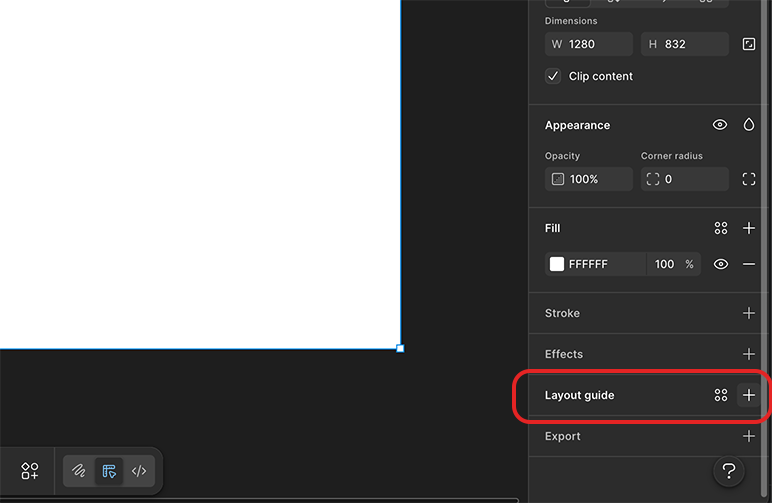
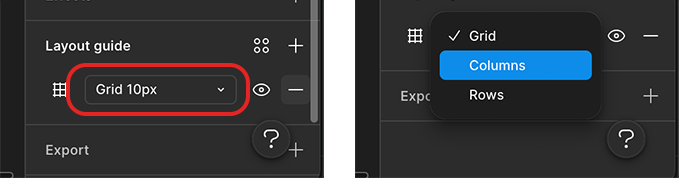
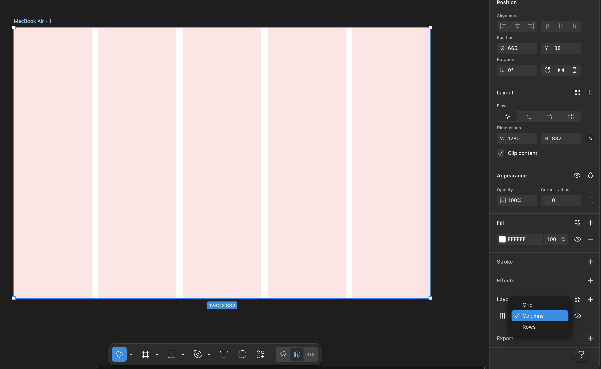
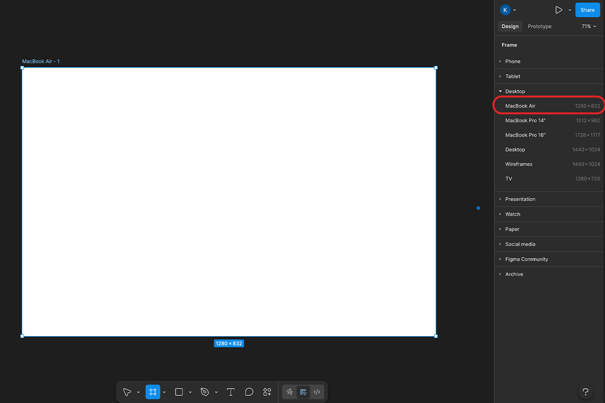
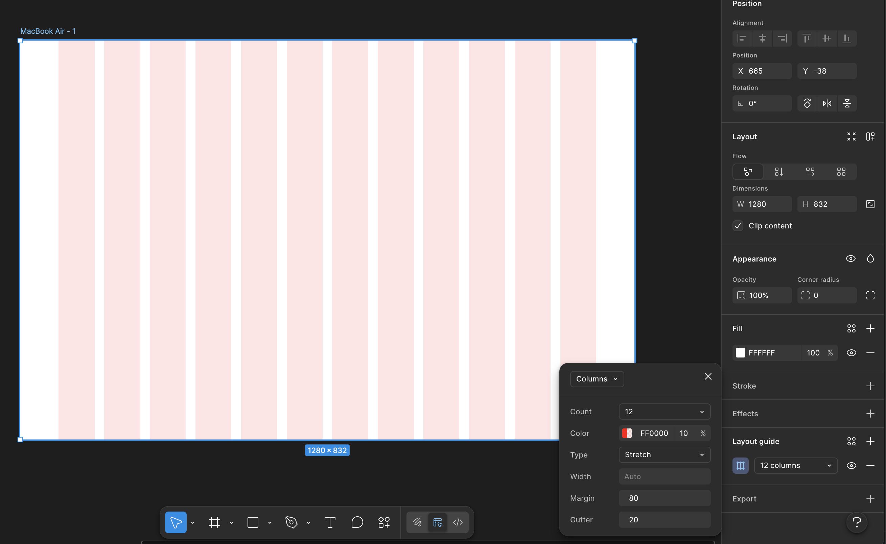

Layout Grid
Antes de ativar o grid, você precisa de um Frame.
-
Aperte a tecla F ou clique no ícone de # na barra superior.
-
No painel direito, escolha um tamanho (ex: Desktop > MacBook Air).

Passo 2: Ativar o Layout Grid
Com o Frame selecionado:
- Vá até o painel lateral direito.
- Procure a seção escrita Layout Guide.
- Clique no ícone de "+" (mais).

- Clique no ícone de 9 quadradinhos (ou no nome "Grid") que apareceu dentro da seção Layout Grid.
- No menu suspenso que abrir, onde diz "Grid", mude para Columns.


Antes de ativar o grid, você precisa de um Frame.
-
Aperte a tecla F ou clique no ícone de # na barra superior.
-
No painel direito, escolha um tamanho (ex: Desktop > MacBook Air).

Para Landing Pages, mudamos de "Grid" para Columns. Use estes valores de referência:
